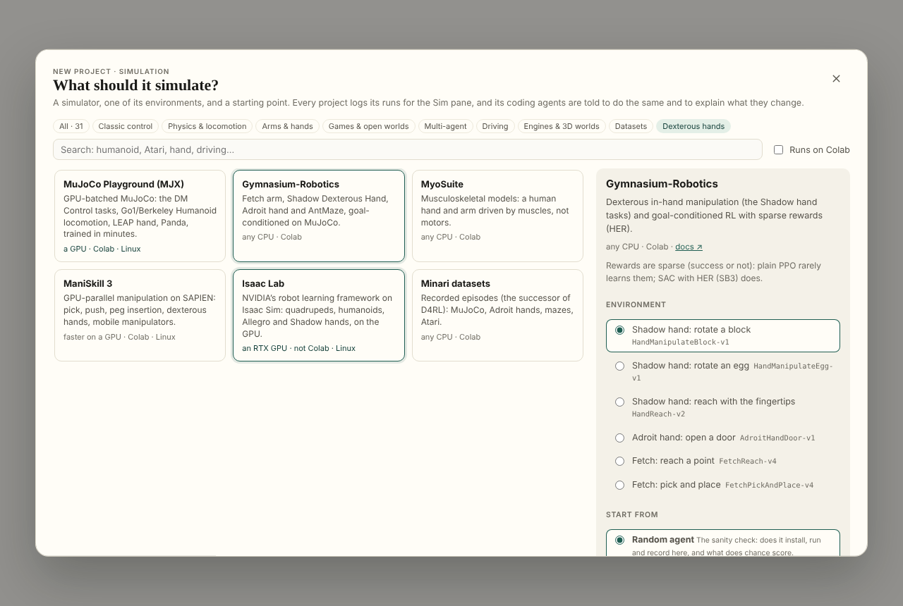
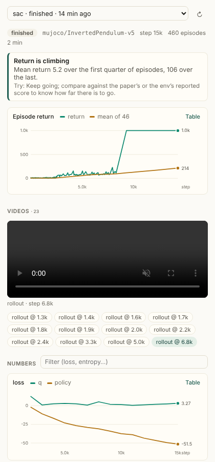
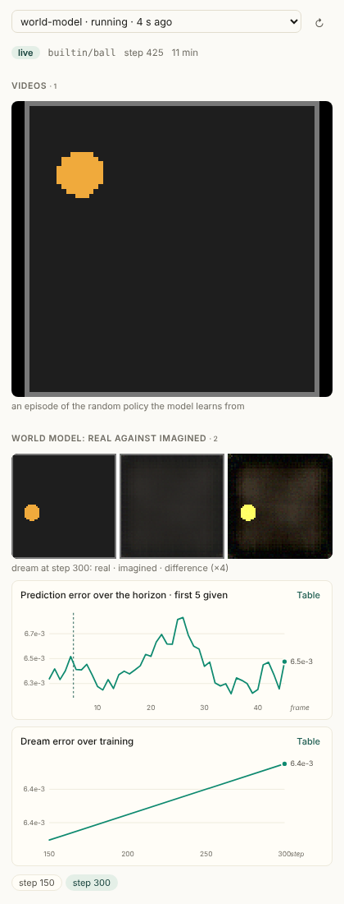
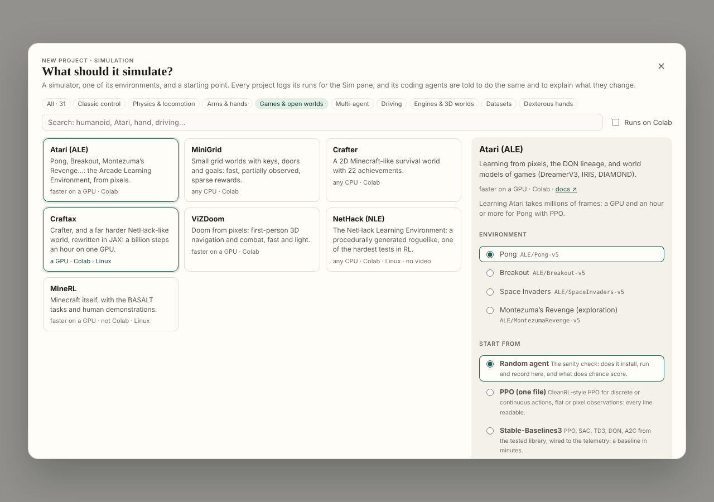
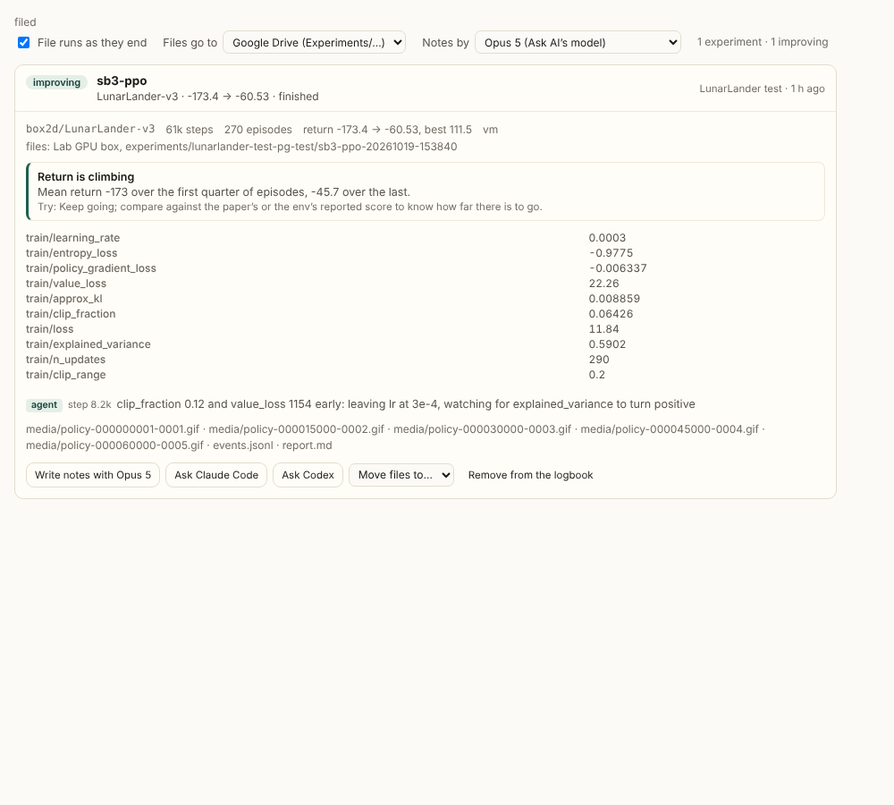
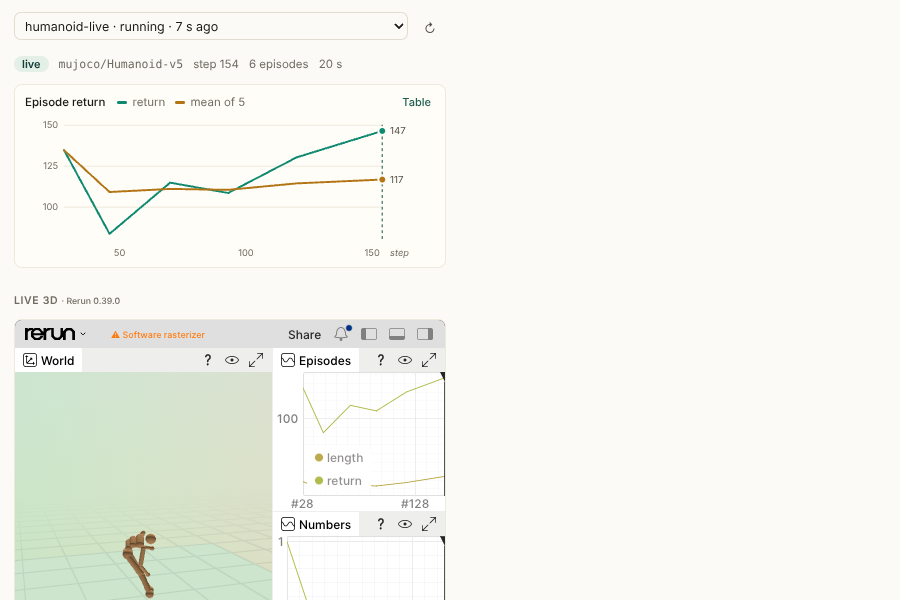
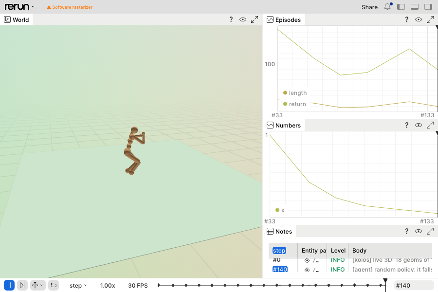

Koios · the Playground
Thirty-one simulators and the templates to learn on them; a telemetry every run writes and a pane that draws it; a live 3D view through the Companion; experiments filed as they end, with notes; a paper's reimplementation wired to a simulator by the coding agents — and the process that made it: every run, every finding, every review.
Part 1
The Playground can start a simulation project: any of 31 simulators, one of its environments, and a starting point (a random agent, PPO, SAC, Stable-Baselines3, a world model from scratch, DreamerV3, TD-MPC2, Isaac Lab). Every project writes its runs in one format, koios_telemetry, and the Sim pane beside the editor draws them as they happen: episodes and returns, the numbers, the videos, a world model's dreams against what really happened, the notes that the code and the coding agents leave on the timeline, and what looks wrong with what to try. Coding agents (Claude Code, Codex, the page's own) are told to use the telemetry and to explain each change in LEARNING.md, so the person can follow and learn.







This document records what was built, what was hard about it, and how each difficulty was handled. simulation-process.md is the process: the order of work, every background run and its result, the review against the existing code, and the checklist. It is a log as much as a design. Each entry under Challenges says what is resolved, what is worked around and what is still open.
| Piece | Where | What it does |
|---|---|---|
| The telemetry module | src/sim/koios_telemetry.py | Run: episodes, numbers, videos, dreams, notes, checkpoints, heartbeats, crash capture. CLI: doctor, summary, tail, note, bridge. One file, no install. |
| The catalogue | src/lib/simulators.ts | 31 simulators in 8 families: install lines, GPU needs, Colab or not, example environments, a Gymnasium env.py or a native starter for each. |
| The templates | src/sim/templates/*.py | random_agent.py, ppo.py, sac.py, sb3.py, world_model.py: real files, run by hand on CartPole, InvertedPendulum and LunarLander (see Verified). |
| Project assembly | src/lib/simProject.ts | env.py, the template, setup.sh, README.md, AGENTS.md (+ CLAUDE.md), LEARNING.md, the telemetry module; DreamerV3, TD-MPC2 and Isaac Lab run scripts with their logs bridged. |
| The picker | src/components/SimPicker.tsx | A simulation on the Playground's home: filter by family, "Dexterous hands", "Runs on Colab", search; pick an environment and a template. |
| The Sim pane | src/components/SimPane.tsx, src/lib/simTelemetry.ts | The right-hand pane's Sim tab: run picker, status, findings, return and success charts, videos, dreams, grouped numbers with notes as dashed marks, timeline, traceback, config, checkpoints, and the machine's doctor. |
| Sync fix | src/lib/playground.ts (isBinaryPath) | The sync carries text; binary files (videos, images, weights) are now left where they are instead of being copied as broken text. |
| The paper in the folder | src/lib/paperContext.ts, paperMarkdown.ts, paperFiles.ts | A project from a paper carries the paper: paper/paper.md (its full text, from the reader's own reflow of the PDF, else arXiv's HTML), paper/EXPLANATION.md, paper/paper.pdf, IMPLEMENTATION_PLAN.md. Every agent is told to read it there, never to fetch it. |
| Data on Drive, compute on Colab | companion/reader_companion/koios_data.py, src/lib/dataStore.ts, worker/moves.js (plan data) | The project's data place — Drive by default — reached from the compute with the account's token through the Worker: koios_data.path/save/sync; runs and checkpoints pushed as they go; chosen in Storage & compute. |
| Evaluation, the paper's way | koios_telemetry.py (Run.evaluation, Run.evaluate), simTelemetry.ts, experiments.ts, SimPane.tsx | An evaluation event: the paper's own measure, with the paper's numbers beside ours; the Sim pane's table and the logbook's report show the gap. A default protocol when the paper gives none. |
| The page's agent runs its commands | src/lib/projectAgent.ts, src/components/ProjectAgent.tsx | A ``` `sh run ``` block is run in the project's console on the connected machine as the agent answers; what it printed goes back; up to 6 rounds of 3. Stop interrupts the command. Off with a tick, and the commands are buttons. |
| Tests | scripts/simulation.test.mjs, scripts/paper-context.test.mjs | Catalogue integrity, every generated .py parses, parsing and diagnostics, and the Python module run for real: its events read by the pane's parser, its findings equal to the pane's. |
| Family | Simulators |
|---|---|
| Classic control | Gymnasium classic control, Box2D, gymnax (JAX) |
| Physics & locomotion | MuJoCo (Gymnasium), DeepMind Control Suite, MuJoCo Playground (MJX), Brax, PyBullet, Drake |
| Arms & hands | Gymnasium-Robotics (Shadow hand, Adroit, Fetch), MyoSuite, Meta-World, robosuite, ManiSkill 3, Genesis, Isaac Lab |
| Games & open worlds | Atari (ALE), MiniGrid, Crafter, Craftax, ViZDoom, NetHack (NLE), MineRL |
| Multi-agent | PettingZoo |
| Driving | highway-env, MetaDrive, CARLA |
| Engines & 3D worlds | Unity ML-Agents, Godot RL Agents, Habitat-Sim |
| Datasets | Minari (D4RL's successor) |
Dexterous hands specifically: the Shadow hand and Adroit (Gymnasium-Robotics), MyoSuite's musculoskeletal hand, the LEAP hand (MuJoCo Playground), the D'Claw (ManiSkill), and the Allegro and Shadow hands in Isaac Lab.
| Template | For | What to watch |
|---|---|---|
| Random agent | every Gymnasium simulator | the floor: what chance scores; does it render here |
| PPO (one file) | discrete or continuous, flat or pixel observations | return; approx_kl < ~0.05; entropy falling slowly; explained_var → 1 |
| SAC (one file) | continuous control: arms, hands, MuJoCo | return after the random warm-up; alpha falling; q_mean against real returns |
| Stable-Baselines3 | a tested baseline; MultiInputPolicy for dict observations (goal-conditioned hands) | SB3's own names |
| World model from scratch | anything that renders, or a built-in ball world | loss/recon, loss/dynamics, the dream video and its error over the horizon |
| Starter (native) | simulators with their own API (JAX, engines, servers) | a first recorded rollout; Brax and MuJoCo Playground also train with --train |
| DreamerV3, TD-MPC2 | their repositories, as published (DMC, Atari, Crafter; DMC, Meta-World) | their metrics, bridged |
| Isaac Lab | RSL-RL PPO on an Isaac Lab task, headless | videos bridged; scalars in the TensorBoard pane |
A run is a folder, runs/<name>-<YYYYmmdd-HHMMSS>/:
run.json: {schema, id, name, sim, config, started, status, host, argv, pid}, rewritten at the end with status (finished / crashed / stopped), ended and error.events.jsonl: one JSON object a line, appended and flushed as it happens. Every event has kind and t (machine seconds); most have step (environment steps, so runs compare).media/: MP4 (H.264, yuv420p, faststart), else GIF, else .npz frames.kind | Fields |
|---|---|
start | name, sim, config, host, resumed |
scalars | step, values: {name: number}; names group by their prefix (loss/policy) |
episode | step, index, return, length?, success?, extra? |
media | step, name, path (from the run's folder), type (video, gif, image, frames), frames?, fps?, bytes, caption? |
dream | step, name, path, type, error: [per-frame MSE], context (frames given, not predicted), fps, horizon |
note | step, text, by (code, agent, human, koios), tag? (problem, spaces, config…) |
checkpoint | step, path, metrics |
evaluation | step, name, metrics: {name: number}, episodes?, protocol? (how it was measured), paper?: {name: number, source?} (the paper's numbers for the same metrics), higher_is_better? (bool or {name: bool}), seeds? |
heartbeat | every 10 s from a thread: step, env_steps, sps |
end | status, step, episodes, elapsed, error? (the traceback) |
NaN and the infinities are written as the strings "nan", "inf", "-inf": JSON has no NaN, and a NaN loss is exactly what has to be seen.
Resolved. Nothing is served from the machine. The pane runs a few lines of Python in the runtime's small second kernel (runQuietly, the same path the TensorBoard pane takes) that lists the runs and returns the focused run's file from the byte where the last read stopped, ending on a whole line. A long run costs only its new lines; a file longer than 6 MB is read from its last part on first sight (and the pane says so). Polls run every 3 s while a run is live, every 15 s otherwise, and at once while there is more of the file to read.
Resolved, and a bug fixed on the way. The sync read every file as text, so a .png brought back by the default rules (*.png is one) arrived corrupted. Binary files are now left where they are (isBinaryPath), and the Sim pane fetches media from the machine, byte for byte, in 2 MB base64 chunks, played from a blob (up to 64 MB a file; past that it says where the file is). The fetch refuses any path outside the project's folder.
Resolved, and verified. koios_telemetry picks an off-screen renderer at import, before any simulator loads: on Linux with no DISPLAY, MUJOCO_GL=egl when there is a GPU (an nvidia-smi or a /dev/dri render node), else osmesa; pygame gets SDL_VIDEODRIVER=dummy. Choosing EGL merely because its library is present was wrong: on a CPU container the library exists and fails (found while testing here). Every generated env.py and starter imports the telemetry first, and a test checks that order. run.grab(render, frames) and run.wrap turn a renderer that fails into one note on the timeline ("rendering failed, so no videos… run the doctor"), and the run goes on training. The doctor renders a small MuJoCo scene in a subprocess to prove it works.
Resolved for what can be known in advance. Each catalogue entry says gpu: no | helps | needs | rtx, colab, linux, video. The picker shows it on each card and filters by "Runs on Colab"; the place step warns when an RTX-only or GPU-only simulator is about to go to Colab (placeWarning). On the machine, python koios_telemetry.py doctor (and the pane's "This machine" section) reports GPUs, EGL / OSMesa / Vulkan, ffmpeg, Java, torch and JAX, and which of the 31 simulators import.
Worked around. It runs on a machine added as a Jupyter server (a lab box, a rented RTX GPU) through the existing Companion / server path. Its own training script runs headless with --video; its videos are bridged into the Sim pane as they are written and its scalars, which RSL-RL writes as TensorBoard files, show in the TensorBoard pane. Isaac Sim's install (Python 3.11, NVIDIA's package index) is left to its guide, linked from the project: pinning it here would go stale within a release. Open: starting and stopping rented GPUs from the page, which the Playground's own design lists as not built.
Resolved for the common formats. python koios_telemetry.py bridge <metrics.jsonl | .csv | glob> [--videos DIR] [--follow | --until-pid PID] follows another codebase's log as it grows and writes a Koios run: step keys (step, global_step, _step, frame…), episode keys (episode/score, episode_reward, eval/episode_reward…), lengths and success; videos are copied in when they stop growing. DreamerV3 (metrics.jsonl), TD-MPC2 (eval.csv), SB3 (progress.csv) and Isaac Lab's video folders are covered; the run scripts start training, bridge until its process ends, then close the run. Open: a bridge from W&B-only codebases (DIAMOND), which would need W&B's offline files.
Found while testing, resolved. SAC ran at ~3 steps a second here. Profiling showed every tiny layer taking milliseconds; a benchmark gave 0.26 ms on one thread against 25 ms on four, the thread pool fighting a container's CPU quota. Colab's two-core CPUs see the same, more mildly. PPO and SAC now use one thread on the CPU (KOIOS_TORCH_THREADS to change it); SAC then did 15,000 steps in 2 minutes and solved InvertedPendulum. The doctor measures both on each machine and prints the export to use.
Found while testing, resolved. The first PPO shared one MLP body between the policy and the critic. The value loss (returns in the hundreds) dominated the gradient, the whole gradient was clipped to 0.5, and the policy's part shrank to nothing: approx_kl ~1e-4, clipfrac 0, return flat. The pane's own diagnostic said "Return isn't improving" on that run. Flat observations now get separate bodies, as CleanRL does (images keep one shared CNN, as the Atari PPO does); CartPole then climbed from 22 to 262 mean return in 100k steps, best 500.
Partly resolved by what exists. The koios checkpoint helper (.reader/pylib/koios) saves on a cadence and on SIGTERM, and the page offers to resume elsewhere. The telemetry records checkpoint events, writes a heartbeat every 10 s, and a run that stops writing for two minutes shows as stalled with what to try. Run(resume=dir) carries on writing to the same run. AGENTS.md tells agents to checkpoint and resume. Open: tying Run(resume) to KOIOS_RESUME automatically.
Resolved by the briefing, checked by the pane. Every project's AGENTS.md (Codex reads it; CLAUDE.md includes it for Claude Code) makes the telemetry a rule: one Run, episodes, environment steps on the x axis, videos on a schedule, dreams for world models, a note for every change with its reason (run.note(...) or python koios_telemetry.py note runs/<run> "…" --by agent from a terminal), LEARNING.md entries written for a learner, and python koios_telemetry.py summary read before changing anything. Agent notes appear as dashed lines on every chart, so "the return jumped here" sits next to "lr 3e-4 → 1e-4: approx_kl was 0.2".
Resolved by a test. The findings exist in Python (for agents, in summary) and in TypeScript (for the pane). scripts/simulation.test.mjs runs both on the same ten synthetic runs (improving, no learning, collapse, NaN, entropy collapse, exploding value loss, crashed, stalled, world-model drift, world model not improving) and requires the same findings. The rule ids match.
Resolved. Scalars are thinned on arrival past 20,000 points a series and drawn downsampled; returns are drawn with a running mean (window n/10, at least 5); videos are recorded one episode in video_every, capped at 600 frames and 256 px, so a run's media stays megabytes, not gigabytes.
Worked around. Gymnasium ids change version (-v4 to -v5); env.py's resolve() takes the newest registered version of the name asked for. make_env retries without a render mode for environments that don't offer rgb_array. Simulators with fragile installs say so on their card (Box2D's swig, MineRL's JDK 8, ML-Agents' Python 3.10, Habitat's conda).
Resolved, for a Companion; a file elsewhere. Watching a robot move as it trains, not a clip of it after. The choice was Rerun: its web viewer runs in the page, it shows 3D, images and time series on one timeline, and its Python SDK logs anything. What a run does now (koios_telemetry, with rerun-sdk installed, which setup.sh does): a gRPC server sink and a scene.rrd file sink together (a plain rr.save() would replace the stream), the web viewer on a port, and scene.rrd served as a stream that follows the file on a third port. run.scene(env) logs a MuJoCo model's geoms once — spheres, capsules, boxes, cylinders, ellipsoids, planes, meshes, with their colours — and run.scene_step() moves them (every second step, at most thirty times a second); run.wrap(env) does both by itself. Scalars, episodes and notes are mirrored, and a default blueprint opens the world large with the series beside it. The Sim pane embeds the viewer in a **Live
3D** section.
Three things were hard:
/companion/ports/<ticket>/<port>/… (PortProxy): a reverse proxy to a port on its computer, the ticket an HMAC of the port with the token (an iframe carries no Authorization header), answers streamed chunk by chunk — the VS Code proxy beside it buffers whole answers, which would never show a frame — and websockets relayed. The page and the Companion compute the ticket the same way; both test suites pin one vector. On a plain Jupyter server or Colab there is no proxy: the pane offers scene.rrd to download and open in Rerun on this computer.rerun+http://host:port/proxy, an origin and nothing else; found when the viewer said Failed to parse URL for the proxied address. Instead the run serves its scene.rrd over HTTP as a never-ending chunked response that follows the file, which the viewer loads from any URL and decodes as the bytes arrive. The gRPC server stays for the native viewer on the machine itself (rerun rerun+http://127.0.0.1:<port>/proxy).Verified here: a random Humanoid-v5 run, the viewer loaded in headless Chromium through the real PortProxy (a tornado app with the handler and a paired Companion's state), the humanoid moving, the series and notes beside it; and the same inside the Sim pane (the pictures at the top). Not verified: through the Companion's HTTPS tunnel from another network (the proxy is the same code either way), and in the desktop app's Electron window.
Built. A run that is over becomes an experiment: a record (src/lib/experiments.ts: where it ran, how it ended, returns first/last/best, success, the last value of each number, the findings, the agents' notes, the config) kept in the project's Logbook → Experiments tab, and a folder with the run's files — events.jsonl, the videos, the dreams, scene.rrd, report.md, report.json — in Google Drive by default, under the Koios folder's Experiments/<project>/<run>/, or on a computer of yours (any Jupyter server or Companion the page knows), chosen once on the tab or per experiment with Move files to…. The workspace files runs by itself while the machine is connected (src/components/ExperimentFiler.tsx, every twenty seconds, runs that ended in the last two days), says so in a toast with the folder and the move, and the Sim pane shows filed in Google Drive ↗ on the run. A shared project's room keeps the records too (worker/logbook.js, experiment: keys, cleaned like the rest).
Notes. By default the model the app is set to for Ask AI (Claude, DeepSeek or Gemini, on your keys or the site's) writes the notes from the record and the project's LEARNING.md: what was tried, what happened, what it means, what next, and one idea explained for a learner. They are kept in the record and as summary.md beside the files. Ask Claude Code / Ask Codex on an experiment queues the request to that agent on the machine instead, which can read the run's files itself and writes runs/<run>/summary.md and a line in LEARNING.md.
What was hard: a logbook entry has to stay small (the room keeps each under a Durable Object's value limit), so the record holds digests and the folder holds the files; media are capped (8 MB a file, 40 MB a run) and what is left out is named; a Jupyter server takes bytes through its contents API (writeBase64, added to the file hosts), Drive through its own; and a run must be filed once, which this browser remembers (experiments:filed:<playground>).
Built. A project started from a paper now carries the simulation toolkit — koios_telemetry.py and koios_simulators.json, the catalogue as data — and its AGENTS.md (read by Codex, by Claude Code through CLAUDE.md, and named to the page's own agent) says: if the paper's experiments run in a simulator, python koios_telemetry.py simulators lists them with what each needs, python koios_telemetry.py use <simulator> [env] writes env.py and setup.sh (and a starter for a simulator with its own API), log every run through koios_telemetry.Run, keep the paper's reported numbers in the README. The page writes the same two files to every machine's helper path, so the commands work in any project's console; Claude Code and Codex started from the page get that path in their PYTHONPATH and a line in their briefing naming the commands, and use run from there copies the module and the catalogue into the folder, so the project stands on its own. A test holds the env.py the machine writes equal to the one the page writes. When the files are on a Companion of yours and the code runs elsewhere (Colab, a GPU server), the agent pane also offers the agent on the files' computer, editing them where they are and running on the compute with koios run (docs/compute-link.md, section 0).
Worked around. Videos are MP4/H.264, which Chrome, Edge, Safari and Firefox play. Open-source Chromium builds (the one Playwright drives, some Linux packages) ship without H.264: found when screenshotting the pane, where the player loaded the video but stayed at 0:00. KOIOS_VIDEO=gif makes the module write GIFs instead, which every browser plays, at a larger size.
Fixed. A project from a paper used to give the agents the title, the abstract and the plan — enough that Claude Code on Colab, asked to implement the paper, went and fetched it from arXiv with its web tool. The reader already had everything: the PDF (in Drive or through the proxy), the text it reflows from the PDF for its own Reflow view, the Explain page and the Implementation page. So a project that starts from a paper, or opens with one cited, now puts the paper in its folder (src/lib/paperContext.ts):
paper/paper.md the full text — front matter (title, authors, arXiv id, where the text came from), the
abstract, then the reflow as Markdown: headings, paragraphs, lists, tables, captions,
maths as TeX (src/lib/paperMarkdown.ts walks the reader's own HTML)
paper/EXPLANATION.md the Explain page, as the file the reader keeps in Drive
paper/paper.pdf the PDF, where the folder can hold a binary file (Drive, a server, a kernel; not a
browser-kept folder, and the sync to the compute carries text only)
IMPLEMENTATION_PLAN.md the plan, as beforeThe text and the PDF are gathered once, when the folder lacks them (one fetch of the PDF serves both); the explanation is read from the reader's cache each time and rewritten only when it changed, and the full text is compared without its date so it is never written twice for nothing. The files are put there as the project opens and again before any agent is asked anything, so an agent never starts before them. Then every briefing says the same line (PAPER_FILES_NOTE in src/lib/paperFiles.ts): the plan file, AGENTS.md, Claude Code's and Codex's --append-system-prompt, the agent by the files, and the page's own agent, which also gets the text itself in each request (120k characters of it, after the plan) — read these; they are the paper; do not search the web for it or fetch it from arXiv. What could not be had is said in the agent pane (no Explain page yet; a folder that cannot hold the PDF; only the abstract when neither the PDF nor an HTML rendering could be read), and the file written says it too, in its front matter. The modules the briefings import name the files only (paperFiles.ts), so the agent's prompt builder pulls in none of the reader's PDF machinery; the test bundler learned Vite's ?worker&url imports on the way, so the gathering module can be tested in Node, and the HTML-to-Markdown walk is tested in Chromium, where a DOM is.
Built. The page's own agent (Koios AI) wrote files where the project keeps them, but its commands were buttons: it never saw a run, so it could not fix what failed without being asked again, and the GPU the project is connected to was a click away from it. Now a command it answers with is run for it in the project's console — the same console the reader types into, on the same machine: Colab's T4, a Jupyter server, a Companion — the folder copied over first when it is kept elsewhere, as for any command. What the command printed (its head and its tail, where the traceback is, up to 6,000 characters) goes back to the agent, which writes again, runs again, or answers: up to 3 commands a round, 6 rounds a request. Files in the same answer are written before the command, so it runs the code just written; a file written twice in one request undoes to what was there before the first. The agent is told which of the two regimes it is in, in the request's <where> block, so the cached system prompt never changes; runs commands under the box turns it off and the commands are buttons again.
Stop interrupts the command on the machine (the agent is then stopped too). An answer that has run a command cannot be picked up after a reload, since the earlier rounds would run their commands again; the job is let go of at the first command, and the pane says what ran. Long trainings stay the reader's: the briefing asks the agent to keep its commands to what ends in a few minutes and to suggest a training rather than start it.
Claude Code and Codex in the same pane already run their own commands, on the compute's copy of the folder, with their edits brought back; and in a project with the paper in its folder Claude Code now has its web tools off (--disallowedTools WebFetch WebSearch), so it cannot fetch the paper even if the briefing were ignored. Codex's web search is off unless asked for on its command line, which the page never does.
Built. Their pane already showed each step as it happened — every command with its output, every file edited with a button to open it, the model's words between — polled from the machine every second or so. What it did not do was show the edits in the editor until the run ended, because with the files kept elsewhere (Drive, a computer of yours) the agent edits the compute's working copy and the edits came home only at the end. Now the pane tells the page of each edit as it is seen in the stream, and the page brings the changed files home a couple of seconds later (one pull at a time, never during a push) and reads the open files again: the explorer and the tab in front follow the agent as it writes. The page's own agent writes home directly, so its edits were always live; its runs now show in its pane too, folded under each command.
Built. Runs are filed in a Project's logbook (challenge 15) — a Project being a collection with a question, papers in roles and a playground as its code. A playground made from a paper — the Playground's from a paper, the Implementation page's Local → Open as a project… — belonged to no Project, so its runs went to a lone folder with no logbook, no notes and no place in the project room. Now the moment such a playground is made, a Project is made for it (src/lib/implementationProject.ts): named after the paper's head (Dreamer — implementation, numbered beside one already so named), the paper in it as its core, the playground as its code, opening on the question Reimplement "…": its method, a run of its experiments, and how the numbers compare with the paper's. From then on every run the playground makes is filed in that Project's logbook with its notes, videos and results, and the Project page shows the code, the logbook and the paper side by side. A playground that already has a Project keeps it.
Built. Training episodes say whether a run learns; they are not what a paper reports. Papers evaluate in their own ways — a mean return over ten seeded episodes with a deterministic policy, a success rate over fifty, a human-normalised Atari score, an open-loop prediction error, a distance to the goal — and a reimplementation is judged by the same measure or not at all. So the telemetry has an evaluation event (run.evaluation(metrics, name=, step=, episodes=, protocol=, paper=, higher_is_better=)): whatever the paper measures, as numbers; how it was measured, in words; the paper's numbers for the same metrics (paper={"return": 850, "source": "Table 1"}), and which way is better where the name does not say (loss, error, distance, cost, regret and time are taken as lower-is-better). The Sim pane draws the latest evaluation of each name as a table — ours, the paper's, the gap in absolute and per cent, coloured by whether it is the better way — with the protocol under it; the logbook's record keeps the latest of each name and the report writes the same table; the notes are asked to read it.
Which protocol is the agent's to find, not the toolkit's to guess: AGENTS.md, the plan file and the Claude Code briefing say to read how the paper evaluates in paper/paper.md, measure that, keep the paper's reported numbers in paper_results.json, and pass them as paper=. When the paper gives no protocol, run.evaluate(make_env, act, episodes=10) is the default — seeded episodes, deterministic actions, mean and standard deviation of the return, mean length, the success rate where the task reports one, the first episode on video — and its protocol string says it is the default, so a reader knows the comparison is loose. The templates evaluate at the end: PPO and SAC with the policy's mode, SB3 deterministically, the random agent as the baseline, the world model with its open-loop error. python koios_telemetry.py summary prints each run's evaluations against the paper's numbers, so an agent reads them before changing anything.
Built. The code can be kept anywhere (Drive, a computer, the browser) and copied to the compute before each run, but a run's data is another matter: a dataset of gigabytes, checkpoints, videos and the run folders have no business on Colab's disk, which is small and gone when the runtime is, and the sync that carries the code (text, under 2 MB) is no way to move them. The reader already refuses to mount Drive in a kernel (docs/colab-run.md: a mounted Drive is every file in it) and its moves had the answer: a machine reaches Drive itself with the account's token, which the Worker holds and the page renews (docs/storage-moves.md, Figure 7), under the drive.file scope that sees only what Koios made. So every project has a data place, Google Drive by default while Drive is connected (Koios/Data/<project>/), else the machine's own disk; chosen in Storage & compute → Data & results.
On the compute, koios_data.py (on the helper path beside the other Koios modules, told where the place is by KOIOS_DATA in each command's environment and by koios_data.json beside it for anything started another way): koios_data.path("datasets/x") gives a local path in a cache under the project's .reader/, fetched from the place when it is there; save(path, evict=True) puts a file or folder there and frees the disk; sync(folder) keeps a folder pushed every few minutes and at exit, only what changed, with Drive's MD5 as the check; fetch, ls, a CLI. The way in for Drive is a data link: a move on the Worker with the plan data, which moves nothing and only holds the token, started when the project opens on a Drive data place and renewed every twenty minutes while it is open (and now by itself past the hour, with the sign-in that stays), remembered in the browser and made again after six days. koios_telemetry.Run syncs its run folder by itself (KOIOS_RUN_SYNC_MINUTES, 3 by default) and says so in the run's timeline; koios.checkpoint puts every checkpoint and latest.json there as it saves. The briefings tell the agents to download datasets into koios_data.path(...), never into the project folder. Uploads of more than 5 MB go in 16 MB resumable pieces; a token that ran out is waited for, a quarter-minute at a time, up to an hour, with a line on stderr saying so.
Not done yet: a computer of yours as the data place when the compute is elsewhere (the mover's archive-through-R2 path would carry it; for now Drive or the compute's own disk), and a size meter for the Drive place in the panel.
On this repository's Linux container (4 CPUs, no GPU), with gymnasium 1.x, mujoco 3.x, CPU torch:
ppo.py on CartPole-v1, 100k steps: mean return 22 → 262, best 500, three videos; finding: Return is climbing.sac.py on InvertedPendulum-v5, 15k steps: 2 min 17 s, best return 1000, 23 videos.sb3.py (PPO) on LunarLander-v3, 20k steps: mean return −155 → −70, videos of the policy.world_model.py on CartPole and on the built-in ball world: reconstruction and dynamics losses logged, dream videos with per-frame error. On the ball world, after 600 iterations, the error stayed near 6e-3 for the five given frames and rose to 8e-3 by frame 45: compounding error, visible on the horizon chart.note and bridge from the CLI.Not run here (no GPU, or a server to install): the JAX simulators, ManiSkill, Genesis, Isaac Lab, CARLA, Habitat, MineRL, ML-Agents, Godot. Their starters follow each project's documented API and every generated file is checked to parse; they are the first thing to try on a GPU machine.
Run(resume=…) from KOIOS_RESUME, so a resumed run continues its own timeline.Part 2
The companion to simulation.md, which describes what the simulation projects and the Sim pane are. This one is the process: the order the work went in, every command that ran in the background and what came of it (including the three the task list shows as Failed), the review of the change against the code that was already there, and the checklist to run before merging or after changing any of it. Written so that someone who was not in the session can retrace it, repeat it, and trust what it claims.
The branch is claude/zealous-bardeen-vr8z49; the first commit is f941149, the review fixes are the commit after.
Two questions, then a build request:
src/lib/simulators.ts): 31 simulators, each with its install, what it needs, and its environments.Each step was chosen so the next could be checked against something real rather than assumed.
| # | Step | Why in this order |
|---|---|---|
| 1 | Read the Playground: src/lib/playground.ts, PlaygroundWorkspace.tsx, the Metrics and TensorBoard panes, telemetry.ts, koiosHelper.ts, colab.ts's runQuietly and the Jupyter contents helpers | To add to the app the way it is built: panes read the machine through the second kernel, helpers are written to .reader/pylib, the sync carries text. |
| 2 | Write src/sim/koios_telemetry.py and run it for real against Gymnasium and MuJoCo in a venv | The format had to exist and be proven before anything read it. The first run found the EGL-without-a-GPU problem (section 4). |
| 3 | Write the templates as real files (src/sim/templates/*.py) and the catalogue; generate projects from them with a small script and run each | Running them found the two learning bugs (PPO's shared body, torch's thread pool) that no amount of reading would have. |
| 4 | Write the pane's reader (simTelemetry.ts) with the same diagnostics as the Python, then the Sim pane, the picker and the project assembly | Two implementations of one rule set, held equal by a test (section 5). |
| 5 | Tests (scripts/simulation.test.mjs), tsc, the full suite, a production build | Section 5. |
| 6 | A UI harness: the real components in Vite with runQuietly swapped for a local Python, screenshotted in Chromium against the real runs | To see the pane and the picker drawn from actual files, not to trust the code. Found the H.264 caveat. |
| 7 | Docs, commit, push | |
| 8 | Review (this document, section 6): the three Failed tasks explained, the diff against existing code re-read, three fixes |
The session's task list shows 26 finished tasks. The ones that mattered, in order, with what each established. Durations are from the list.
| Task | Result | What it established |
|---|---|---|
| Install deps and a Python venv with gymnasium | ok, 18 s | gymnasium 1.x, mujoco 3.x, imageio-ffmpeg in a venv under the scratchpad; npm ci for the repo. |
| Exercise the telemetry module end to end | crashed by design: the test script raises at the end | The run recorded its own crash (status: crashed, the traceback in the end event), three CartPole videos as MP4, a dream with per-frame error, a note; summary printed all of it. Also found: doctor crashed on importlib.util.find_spec("google.colab") when google isn't installed. Fixed with _have(). |
| Install OSMesa/EGL and recheck rendering | 12 s | With libegl1 present but no GPU, MUJOCO_GL=egl fails inside MuJoCo. The library being there is not enough. |
| Prefer OSMesa without a GPU and retest MuJoCo video | 5 s | The renderer is now EGL only when nvidia-smi or a /dev/dri/renderD* node exists, else OSMesa. HalfCheetah rendered off-screen to a 64 KB H.264 MP4 (checked with ffmpeg: h264 (High) yuv420p). |
| Install CPU torch and SB3 for template testing | 5 m 36 s | CPU torch, SB3, Box2D (via swig). |
| Run generated PPO project on CartPole | 13 s | Return flat (22 → 28 over 60k steps). The pane's own diagnostic flagged it: Return isn't improving. Cause: one MLP body shared by actor and critic; the value loss dominated the clipped gradient. |
| Separate actor/critic bodies and rerun PPO | 21 s | 22 → 262 mean return, best 500, in 100k steps. Return is climbing. |
| Run SAC, SB3 and world-model projects | Failed (exit 144) | See section 3.1. SB3 on LunarLander finished inside it: −155 → −70, three videos. SAC was running at ~1 step/s. |
| Run SAC alone and time it | 8 m 21 s | Still ~3 learning steps/s with nothing else running: not contention. |
| Profile SAC | 1 m 43 s | All the time inside torch._C._nn.linear and torch.relu: 3 ms for a 256-wide layer. |
| Benchmark torch thread counts | 11 s | 0.26 ms on 1 thread, 25.1 ms on 4 for the same layer on this 4-CPU container. The thread pool against a CPU quota. |
| Single-thread default and doctor thread benchmark | 5 s | PPO and SAC set one CPU thread (KOIOS_TORCH_THREADS overrides); the doctor measures both and prints the export. |
| Validate SAC and world model with one thread | Failed (exit 144) | See section 3.1. SAC inside it finished: 15,000 steps in 2 m 17 s, best return 1000 (InvertedPendulum solved), 23 videos. |
| Check existing sync tests and typecheck | 33 s | tsc -b clean after the sync change. |
| Run the simulation tests / Fix tests and rerun | 14 s / 13 s | First run: 30/32. One test regex was wrong about PettingZoo (it imports its simulator inside main()); one needed external/imports options to load playground.ts as the other tests do. Then 32/32. |
| Picker styles and typecheck | 36 s | Clean. |
| Start harness and screenshot the Sim pane | Failed | See section 3.1: Playwright's default browser path, in a throwaway script. |
| Run harness from inside the repo and screenshot | 20 s | Vite needed to run from inside the repo to resolve packages; React needed pre-bundling. |
| Restart vite with pre-bundled React and screenshot | 23 s | The Sim pane drawn from the real SAC run (docs/sim-pane.png). |
| Screenshot the simulator picker | 4 s | docs/sim-picker.png, on the "Dexterous hands" filter. |
| Screenshot the world-model run in the pane | 13 s | docs/sim-dream.png: the dream video, the error over the horizon, the error over training. |
| Clean up, typecheck and run all tests | 1 m 04 s | tsc clean; 1736 of 1740 pass; 4 fail in glass.test.mjs ("glass wallpapers"). |
| Run the glass tests on the base commit | 6 s | The same 4 fail on main at 5ce2022, in a worktree with no change applied. Pre-existing, unrelated. |
| Production build check | 34 s | vite build succeeds; the telemetry module's text is in the bundle (the ?raw import works in Vite as in the test bundler). |
| Add GIF override, update docs, rerun tests | 14 s | KOIOS_VIDEO=gif; 32/32. |
| Add screenshots, commit and push | 5 s | f941149, pushed. |
None of the three is a failure of the code in this change. Each is the session's shell wrapper reporting on a long command that was moved to the background and then ended by hand.
& and wait, exceeded the foreground limit, were moved to the background, and were then killed by me (pkill -f world_model.py, then kill on the remaining jobs) once I had what I needed from them: the first because SAC was crawling and I wanted to profile it alone; the second because the world model on the CPU was at ~1 iteration a second and the runs it had already written were enough to screenshot. Their output files show the jobs that completed (Done) and their summaries; the kill produces the 144.browserType.launch: Executable doesn't exist at /opt/pw-browsers/chromium_headless_shell-…. The repo's playwright package expects a newer browser build than the one pre-installed in this environment. Fixed in the next task by launching with executablePath: '/opt/pw-browsers/chromium', as the environment's notes say to. Nothing in the repository uses that script.The world-model run that was killed had, by then, written loss/recon, loss/dynamics, two dreams and their error curves, which is what docs/sim-dream.png shows; simulation.md reports those numbers and says the run was not taken further on a CPU.
| Found | Where | Fix |
|---|---|---|
| EGL fails without a GPU even when its library is installed | first MuJoCo render on this container | choose EGL only with a GPU present, else OSMesa |
find_spec("google.colab") raises when google isn't installed | doctor | _have() guards it |
| PPO with a shared actor-critic body doesn't learn CartPole | first PPO run; flagged by the pane's own diagnostic | separate bodies for flat observations, shared CNN for images, as CleanRL does |
| torch's default thread pool is ~100× slower than one thread on a small CPU container | SAC at 3 steps/s; profile; benchmark | one thread by default in PPO and SAC; the doctor measures both |
| The sync copied PNGs (in its default bring-back rules) as text, corrupting them on Colab's kernel path | reading pullBack while planning video fetching | binary files left on the machine; the pane fetches them byte for byte |
| Open-source Chromium can't play H.264 | the pane's <video> stuck at 0:00 in the screenshot | KOIOS_VIDEO=gif |
| "No episodes logged" fired on a world-model run, which has none by design | first world-model summary | the finding skips runs with dreams |
summary printed "0 env steps/s" on finished runs | SB3 summary | speed shown only while running |
What was run, where, and what passed. "Here" is this repository's cloud container: Linux, 4 CPUs, no GPU, no display, Python 3.13, Node 22.
| Check | Command | Result |
|---|---|---|
| Types | npx tsc -b | clean |
| VS Code extension types | npm run typecheck:vscode | clean |
| New tests | node --test scripts/simulation.test.mjs | 32/32 (catalogue integrity; every generated .py parses under Python; event parsing; incremental reads equal whole reads; all ten diagnostic cases; TypeScript and Python findings identical on the same runs; the module writing a crashed run, videos, dreams; bridge on DreamerV3-style JSONL and TD-MPC2-style CSV; note from the CLI; doctor; the on-machine listing and chunked media code; the media code refusing a path outside the project; isBinaryPath) |
| Full suite | npm test | 1736/1740; the 4 failures are glass.test.mjs and fail identically on main |
| Production build | npx vite build | succeeds; the Python module text is in assets/index-*.js |
| Worker | npm run check:worker (wrangler dry run) | succeeds (the Worker is untouched) |
| CI | .github/workflows/deploy-site.yml runs npm ci && npm run build:pages on pull requests; deploy-worker.yml runs seven unrelated test files | both exercised locally above |
| PPO template | CartPole-v1, 100k steps, 1 thread | 22 → 262 mean return, best 500 |
| SAC template | InvertedPendulum-v5, 15k steps, 1 thread | best return 1000 in 2 m 17 s, 23 videos |
| SB3 template | LunarLander-v3, PPO, 20k steps | −155 → −70 mean return, videos of the policy |
| World-model template | CartPole and the built-in ball world, CPU | losses and dreams logged; error rising over the horizon |
| Random-agent template | CartPole, InvertedPendulum, HalfCheetah via run.wrap | episodes, videos |
| Off-screen video | MuJoCo through OSMesa | H.264 MP4, confirmed with ffmpeg |
| The UI | Sim pane and picker in Chromium against the real runs | docs/sim-pane.png, docs/sim-dream.png, docs/sim-picker.png |
Not run here, and why: the JAX simulators (Brax, MuJoCo Playground, Craftax, gymnax), ManiSkill, Genesis, Isaac Lab, CARLA, Habitat, MineRL, Unity ML-Agents and Godot need a GPU, a server, a JDK, conda or an engine binary. Their starters follow each project's documented API and are checked to parse. They are the first thing to run on a GPU machine, and simulation.md says so.
Every file that existed before and was touched, what changed, and why it is safe. (New files can't break existing behaviour except through these.)
| File | Change | Risk considered | Verdict |
|---|---|---|---|
scripts/bundle.mjs | an esbuild plugin for ?raw imports | affects every test's bundling | the full suite ran through it: same results as before, the 4 glass failures pre-existing |
src/components/Charts.tsx | LineChart takes optional marks | every existing chart | drawn only when passed; nothing passes it but the Sim pane |
src/lib/playground.ts | start gains 'sim'; isBinaryPath; pushFolder, pullBack, pullEdits skip binary files | records with start: 'sim' read by an older build; the sync's behaviour | nothing switches on start (grepped); normalise keeps the value. The sync carried text: on a Jupyter server a binary read already returned null (400) and was skipped silently; on Colab's kernel path it was decoded as UTF-8 and written back corrupted. Now both skip and report it. A behaviour change, and a fix. |
src/components/PlaygroundWorkspace.tsx | the Sim tab, its glyph and palette entry; ensureHelper also writes koios_telemetry.py (48 KB) to .reader/pylib | one more write per machine per tab before the first command | wrapped in the existing .catch(() => undefined); a failed write leaves helperOn unset so it is retried; .reader/ is in the default ignore rules so it is never synced. The "skipped" wording in the Sync report updated to say "over 2 MB, or not text" (review fix) |
src/components/Playground.tsx | the seventh start card and fromSim | the home's grid is repeat(3, …) | seven cards wrap to a third row; no layout change needed |
src/styles.css | new .sim-* classes and .cell-chart .mark | collisions | all new names; .mark scoped under .cell-chart |
package.json | simulation.test.mjs in test and test:unit | CI | the Python tests skip themselves without python3; the numpy ones without numpy; none need a simulator |
README.md | the Playground section: "Seven ways to start", a A simulation subsection | prose only |
Review fixes made after the first commit (section 2, step 8):
!bash setup.sh, but a playground notebook's kernel starts where the machine starts it (Colab's /content, a server's home); only the console cds into the folder (shellCell). The cells now say so and show a %cd first.glob('**/events.jsonl'), including node_modules and data/. It is now an os.walk that prunes those folders and stops six levels down; the Python find_runs does the same, so summary and the pane see the same runs. A run under data/ is not found, by design.After the review, two more runs were made specifically to see the pane as someone training a game-playing agent or dreaming a world would see it: SB3's PPO on LunarLander (a Box2D game) for 60k steps, and the world-model template on its built-in ball world, both with KOIOS_VIDEO=gif so the screenshot browser could play them, and with a note added from the terminal as an agent would (koios_telemetry.py note … --by agent). The live screenshot found one more thing:
train/, so train/value_loss (~1000) and train/learning_rate (0.0003) shared a chart on which only the big one could be read, and the four-name legend overflowed the pane. scalarCharts now lets a prefix's names share a chart only while their largest values are within 20× of each other (a test covers SB3's names), and the legend wraps. The screenshots in simulation.md were retaken after the fix.Asked for after the first review: a live, orbitable 3D view of the simulation rather than clips. Built on Rerun, in this order, each step checked before the next:
rr.save() replaces the stream sink, then that set_sinks with serve_grpc's server does the same: the pairing that works is GrpcServerSink + FileSink in one set_sinks.koios_telemetry: the sinks, the viewer, the live3d event, scalars/episodes/notes mirrored, scene() for MuJoCo geoms, scene_step(). A Humanoid-v5 run showed a speck: MuJoCo's 40 m floor; capped, and a default blueprint added.PortProxy (0.18.0), with a unit test that proves answers stream (three chunks 50 ms apart must arrive as three), the ticket is the credential, POSTs carry body/path/query, nothing-listening is a 502, websockets relay. The first run of the POST test failed in the test's own upstream handler, not the proxy./proxy. Resolved by streaming scene.rrd over HTTP from the run (_RrdTail), which the viewer loads from any URL. Then the humanoid moved live through the proxy.docs/sim-live3d.png. The first screenshot showed the Colab fallback instead: Vite caches files under node_modules as immutable, where the harness lived, so the edited page never reached the browser until the dev server restarted with --force.Three background commands in this phase ended with code 144 again: each was a long command whose Python child (a run holding ports, a proxy) I ended by hand once it had served its purpose; the pkill -f pattern also matched the shell running it twice, which is why the pattern changed to [r]r-smoke.
Asked for next: results logged automatically where they are accessible, Drive by default, moved elsewhere on request, with notes by the app's model or the signed-in coding agent; and a paper's reimplementation able to reach the simulators through the agents. Built in this order:
src/lib/experiments.ts) and the logbook's new field, the Worker's cleaning and ops, the store's ops and broadcast handling: pure first, with scripts/experiments.test.mjs pinning the digest (its own first numbers were wrong: the first tenth of 0, 2, 4… is 5), the caps, the Markdown, the Worker's refusals, and the room keeping and removing records. Two assertions in project-room.test.mjs compared an empty logbook's exact shape and gained experiments: []; nothing else in the suite changed.src/lib/experimentFiling.ts): the whole events.jsonl read in pieces, media fetched within the caps and written as bytes (writeBase64 added to the Jupyter and kernel hosts; Drive had it), the record kept and remembered; the notes through streamModel; moving between places.koios_telemetry.py use / simulators, tested against the page's own envPy byte for byte, and run for real: use gymnasium CartPole-v1 on a bare folder, then the random agent on it.fileRun on the finished LunarLander run: the files (events, five GIFs, report.md, report.json) landed under experiments/… on that server and the Experiments tab drew the record (docs/experiments-tab.png). Drive itself cannot be reached from here (no Google sign-in), so the Drive place is exercised only by the same code path's Jupyter twin; and no model key is available here, so the notes were not generated in this session.A screenshot after the merge showed Claude Code, on Colab, asked to implement a paper, fetching it from arXiv with its web tool: the project had given it a title, an abstract and a plan, and nothing else of the paper. Asked why, when the reader holds the PDF, the reflowed text, the Explain page and the plan — built in this order:
fullText is read off the page's DOM (src/lib/screen.ts), which exists only while the paper is on screen; the Playground has no such DOM. The reader's own reflow of the PDF (loadPaperContentFromPdf) and arXiv's HTML (loadPaperContent) both give HTML, so the folder's file is made by walking that HTML into Markdown (src/lib/paperMarkdown.ts) — the PDF first, as the reader itself prefers, arXiv's rendering when there is no PDF, the abstract alone when neither can be read, and the front matter says which.src/lib/paperContext.ts): one fetch of the PDF — Drive first, the proxy after, as the reader's own open does — serves both the text and paper/paper.pdf; the Explain page from the reader's cache or Drive through loadExplanation; written where missing or changed, with a report of what was written, kept and could not be had, and a line for the agent pane.PAPER_FILES_NOTE): the plan file, AGENTS.md, the Claude Code and Codex request and briefing, the agent by the files, and the page's own agent, which also gets the text in its request (ProjectView.paper.fullText, read from the folder's own file so the two never differ).What testing found: the first bundling of the prompt builder failed in Node — importing the gathering module pulled pdf.js and its Vite ?worker&url worker import into projectAgent.ts's test bundle. The names moved to a module of their own (paperFiles.ts) so the prompt builders import no reader machinery, and the test bundler (scripts/bundle.mjs) learned to answer a ?worker&url import with an empty address, which also lets the gathering module load in Node with pdf.js external. The Markdown walk needs a DOM, so its test runs the bundled module in Chromium through Playwright (skipped, not failed, on a machine with no Chromium); the writing is tested against a folder in memory with the gathering stood in for — all written the first time, nothing fetched again the second, the explanation rewritten only when it changed, a text-only folder told so. scripts/paper-context.test.mjs, nine tests; the full suite otherwise unchanged.
Asked next: the agent redirected to the files (not just told), writing the code where it is and running it on the connected machine or GPU through the editor's terminal. Three things, in order:
--disallowedTools WebFetch WebSearch whenever the project has the paper in its folder (noWeb in runArgv, pinned in cli-agent.test.mjs); Codex has no web search unless its command line asks, and the page never asks.askAgent grew a run callback: when a reply holds ``` `sh run `` blocks and the callback is there, the reply's files are written first, each command is run in the project's console through the workspace's own run (which pushes the folder when it is kept elsewhere, as for a typed command), the console entry's output is read back from the kernel state, clipped head and tail, and the loop goes round again with it — 3 commands a round, 6 rounds, then the rest are buttons as before. Stop` interrupts the kernel; the saved job is let go of at the first command so a reload never re-runs one. The pane shows each run folded under its command with how it ended, and a runs commands tick (on by default, kept per browser).<where> block, not the cached system prompt, so the cache holds across a change of tick.Not verified here: a real model and machine running the loop end to end (no model key, no Colab in the container). The pieces around it are pinned — the <where> wording, the output clipping, the argv — and the loop itself is the reads loop with a second branch, typechecked. The first live run should ask for something small (a syntax error planted in main.py, say) and watch the console and the pane.
Three asks at once, built in this order:
CliAgent's poll already parsed each step; it now calls back on an edit event, and the workspace's onAgentEdit pulls the working copy home after 2.5 s (debounced, one at a time) and reloads the open files. No new parsing: the same events the pane draws.useProjectForImplementation (store-bound) around two pure helpers in projects.ts (projectNameFor, projectQuestionFor, pinned in projects.test.mjs): find the Project whose playgroundId is the playground's, else create a collection, make it a project with the paper as core and the playground as code, and add the paper to it. Called at both places a paper becomes a playground.src/lib/googleStay.ts). The desktop app's code flow brought to the page: the Worker's callback page now posts the code to its opener when it has one (the app's reader-app:// link otherwise, unchanged), the page exchanges it at /google/desktop/token with PKCE and keeps the refresh token in localStorage; tokenFor and renewQuietly try the kept grant first, so a new tab signs in by itself and a token that ran out is renewed with no window; the renewal banner hides when renewsItself(); sign-out revokes through /google/desktop/revoke. The /health mapping had declared googleDesktop without reading it — fixed. scripts/google-stay.test.mjs: the grants kept and found, PKCE, the consent address, the renewal and the grant forgotten on invalid_grant, with loadTogether so the proxy address set reaches the module.Not verified here: the popup against real Google (no sign-in in the container); the exchange and refresh calls are the same the desktop app makes, tested in google-desktop.test.mjs against the Worker's handler.
Asked for an evaluation event, with the caveat that papers evaluate their simulations differently. So the event is open — any metrics, the protocol in words, the paper's numbers beside ours, which way is better — and the choice of protocol is pushed to the agent reading the paper, with a stated default for when the paper gives none. Built in this order: the Python (Run.evaluation, Run.evaluate, read_run, summary), the TypeScript parser and the pure comparison (evaluationRows, higherIsBetter, latestEvaluations), the record (digest, Markdown table, list line, the Worker's cleaning, with an empty or malformed list dropped rather than kept), the pane's table, the five templates, the briefings, the schema row. Tests: the module writes one by hand and runs the default protocol on a fake env (no Gymnasium needed) and the pane's parser reads both back, the summary prints them against the paper; the comparison's signs and percentages; the record's table and the Worker's cleaning. Not run here: a real policy evaluated on a real simulator (no simulator installed in the container); the template code paths are the same calls, typechecked by Python's parser only.
Asked: Colab's disk is small; the data should be where the person chooses — Drive by default — whatever holds the code. Read first: the reader's own rule against mounting Drive in a kernel, and the moves' way of letting a machine reach Drive with a Worker-held token. Built on that: koios_data.py (a Drive client cut down from the mover's, plus path, fetch, save, sync, ls and a local plan for the machine's disk), the Worker's data plan (one line: a move that moves nothing), the page's dataStore.ts (the place, the link, the environment and the file beside the module, the renewal), the workspace writing both before every command and agent, the panel's section, the telemetry's self-sync and the checkpoint helper's copy, and the briefings. Tested without Drive: the local plan end to end (path, save, sync, fetch, ls), a Run whose folder is synced to a local place and a checkpoint copied there, the Worker's data plan starting and serving its token to the key, and the environment strings. Not run here: Drive itself (no sign-in in the container) — the client is the mover's, which has run against Drive, with the listing cached per folder and the MD5 check before an upload the only additions.
npx tsc -b && npm run typecheck:vscode
node --test scripts/simulation.test.mjs scripts/experiments.test.mjs scripts/paper-context.test.mjs scripts/google-stay.test.mjs # python3 for some, Chromium for one
npm test # expect only glass.test.mjs's 4 pre-existing failures
npx vite build --outDir /tmp/build && grep -l "koios_telemetry: what a simulation run" /tmp/build/assets/*.js
(cd companion && python -m unittest $(ls tests/test_*.py | sed 's#/#.#; s#\.py$##')) # the Companion: 157 tests, its port proxy's includedAnd on a machine with Python (a venv is enough), the thing itself:
python -m venv v && . v/bin/activate && pip install "gymnasium[classic-control]" torch imageio imageio-ffmpeg
node -e "..." # or: start a simulation project in the app, Gymnasium / CartPole-v1 / PPO, and copy its files out
python koios_telemetry.py doctor # rendering, ffmpeg, the thread advice
python ppo.py --total-steps 100000 # expect the return to climb past 200
python koios_telemetry.py summary # expect "Return is climbing"On a GPU machine, additionally: Brax or MuJoCo Playground with --train, ManiSkill's starter, and Isaac Lab's train_isaaclab.sh on an RTX card. None has run yet.
SIMULATORS (src/lib/simulators.ts): module must match the doctor's list in koios_telemetry.py (a test enforces it); for a Gymnasium one give imports/make, for a native one a native starter that imports koios_telemetry before the simulator (a test checks the order) and logs with Run. caveats for what will bite.src/sim/templates/, imported ?raw in simProject.ts, an entry in TEMPLATES, and templatesFor deciding when it is offered. Keep its "what to watch" line in WATCH and its primer in PRIMER: they go into README.md and LEARNING.md of every project.diagnose in both koios_telemetry.py and simTelemetry.ts with the same id, and a synthetic case to CASES in the test, which requires both to agree on it.Run._event, read it in read_run (Python) and applyEvents (TypeScript); bump SCHEMA only if an old reader would misread it.